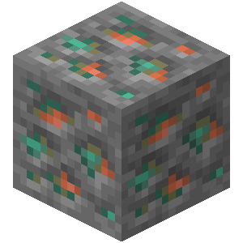

Kovy v Minecraftu
OverWorld Kovy
Měď

Měďená ruda je nerost, který se vyskytuje v podzemí. Měděná ruda se snaží generovat 6krát na chunk ve skupinách od 0 do 16.
Železo

Železná ruda je nerost, který se vyskytuje v podzemí. Je to nejběžnější materiál, z kterého se dá udělat nářadí a výzbroj.
Zlato

Zlatá ruda je nerost, který se běžně vyskytuje vedle kamenů.Zpravidla se vyskytuje v žilách po 4-8 blocích.
UnderWorld Kovy
Nether zlato
Je stejný jako zlato akorát se vyskytuje jenom v pekle.Padají z něj místo rudy nugetky.
Netherite(ancient debris)
Netherite je vzácná nerost která se vyskytuje v pekle.Jeho vysoká odolnost proti výbuchu ho činí imunním vůči běžným výbuchům. Také je odolné proti lávě takže se nedá v ní spálit.